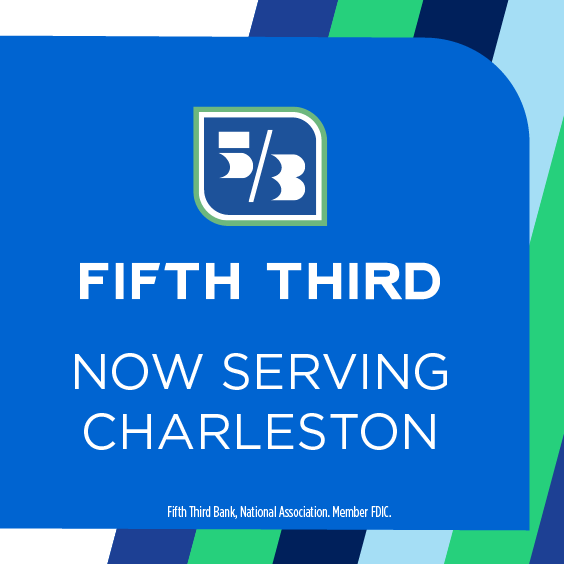

Tournaments
In tennis there are 5 different types of events that are played throughout the year. They include 125's, 250's, 500's, 1,000's, and grand slams. These tournaments determine the total amount of points that the winner can earn . At grand slams players can earn between 250 to 2,000 points if they win a tournament .
March 4th - March 17th, 2024
Indian Wells: Indian Wells,California:March 4 - March 17

Wesley Koolhof and Nikola Mektic earned their third title of the season Friday when they were crowned champions at the BNP Paribas Open. The Dutch-Croatian duo overcame fifth seeds Marcel Granollers and Horacio Zeballos 7-6(2), 7-6(4) in a one-hour, 51-minute final after winning 85 per cent of their first-serve points. A pivotal moment came on serve at 5-6 in the second set, when they fought off a set point to avoid a Match Tie-break. Despite failing to convert any of their five break points, Koolhof and Mektic stepped in on returns in both tie-breaks and looked to cut off any ball at net to lift their first ATP Masters 1000 team title. Koolhof and Mektic opened the season with an ATP 250 crown in Auckland, where they ousted Granollers and Zeballos in the final. Having also won in Rotterdam, the pair boasts a 16-3 season record. They are 14-0 when winning the first set. The pair of former World No. 1s in the PIF ATP Rankings, who won the 2020 Nitto ATP Finals together, rejoined forces at the start of this season after they each played with different partners the past three years. Mektic, 35, celebrated his 300th career match win when he and the 34-year-old Koolhof advanced past the quarter-finals. Top seeds Hsieh Su-Wei and Elise Mertens won their second BNP Paribas Open doubles title after defeating No.3 seeds Storm Hunter and Katerina Siniakova 6-3, 6-4 in the final on Saturday. The title is Mertens' 20th career doubles title and Hsieh's 34th. This is the fourth Indian Wells title for Hsieh and her second with Mertens. The two first lifted the trophy together in 2021. Hsieh also won the title in 2014 (w/ Peng) and 2018 (w/ Strycova). Mertens has now won Indian Wells three times, having won her first with Aryna Sabalenka in 2019. The reigning Australian Open champions capped off a dominating fortnight in the desert, as the duo ran through the draw without losing a set. Hsieh and Mertens defeated No.6 seeds Demi Schuurs and Luisa Stefani, No.4 seeds Nicole Melichar-Martinez and Ellen Perez, and the No.3 seeds on Sunday to win their second team title of the year. Saturday's final was the season's second meeting between Hsieh/Mertens and Hunter/Siniakova. The two faced off in the Australian Open semifinals, where Hsieh/Mertens won 7-5, 1-6, 6-3 on their way to the title. Hunter and Siniakova captured their first team title of the year last month at the Dubai Duty Free Tennis Championships. After exchanging breaks to start the match, both teams protected their serves until Hsieh and Mertens broke Siniakova at love for a 5-3 lead. Mertens fired a clean backhand winner up the line to seal the break and then served out the set. The second set went with the server with no break points generated until 4-4. Hsieh fired a perfectly read backhand winner to earn break points on Hunter's serve and the eventual champions converted and closed out the 70-minute victory. World No.1 Iga Swiatek rolled to her second BNP Paribas Open title on Sunday in Indian Wells by toppling Maria Sakkari -- who she beat 6-4, 6-1 to win in the California desert two years ago -- by a 6-4, 6-0 final score. Swiatek won the last eight games of the 68-minute match, in which she won the first three in 15 minutes on court. Sakkari missed more balls than she made early on, as Swiatek won 12 of the first 15 points, but there was a match to be had for much of the first set. From 0-30 down on her serve in the fourth game, No.9 seed Sakkari won three straight games to level the first set at 3-3 -- but from 4-4, the World No.1 found another level. By the end of the match, she broke Sakkari five times, and only lost five points in the second set. Swiatek won 12 straight sets in her second BNP Paribas Open title run, and lost just 21 games overall. Swiatek now owns eight career WTA 1000 titles, and 19 career Hologic WTA Tour titles in all. She's now won at least two titles in each of the last four seasons. The Spaniard surged past World No. 4 Daniil Medvedev 7-6(5), 6-1 on Sunday to retain the BNP Paribas Open title. It is the 20-year-old's first title since he triumphed at Wimbledon last year. Alcaraz entered the Indian Wells fortnight with a 6-3 record on the season and during his most recent outing, in Rio de Janeiro, he suffered an injury scare to his ankle, forcing him to retire. But the No. 2 player in the PIF ATP Rankings emerged from a star-studded field in the California desert with the trophy and restored confidence. Alcaraz and Medvedev also met in the Indian Wells final one year ago, when the former won 6-3, 6-2. The two-time Indian Wells champion took a 5-3 lead in their Lexus ATP Head2Head rivalry after a championship performance in which he hit 19 forehand winners compared to 11 total winners for his opponent. Alcaraz was not as sharp early on as he was in the semi-finals, when he ended Jannik Sinner’s perfect 16-0 start to 2024. Medvedev broke in his first return game of the match and appeared confident in the California desert, while his opponent was making uncharacteristic unforced errors. But once Alcaraz battled back onto serve at 3-2 with a sensational forehand passing shot, the message was clear: Game on! The Spaniard showed the incredible athleticism and shotmaking that has earned him millions of fans across the globe. Many rallies were adventures with the players' sneakers squeaking on the court as they quickly changed directions to adjust during the thrilling points. Alcaraz broke in his first return game of the second set, dismissing a forehand return for a winner up the line. He never looked back, claiming the crown after one hour and 42 minutes. The champion took a page out of the Medvedev returning book, standing well behind the baseline to take full cuts at the ball and immediately put pressure on his opponent. The tournament did not start well for Alcaraz, who lost his opening set of the event against rising Italian Matteo Arnaldi. But once he found his game, it became clear that Alcaraz was back near the best. The 20-year-old defeated two of the Top 4 players in the world over the final weekend to earn his fifth ATP Masters 1000 title and 13th tour-level crown overall. Medvedev tried to earn his first Indian Wells trophy. The California event is the last hard-court Masters 1000 event he has not yet won — the 28-year-old has claimed six of nine Masters 1000s overall. The World No. 4 Medvedev will now head to Miami, where he will defend the title. Alcaraz is keen to maintain his momentum in Florida, too.
5th Third Charleston Open: Charleston, South Carolina:March 11 - March 16 
No.4 seed Elisabetta Cocciaretto defeated No.7 seed Diana Shnaider 6-3, 6-2 in the final of the Fifth Third Charleston 125 to complete a title run in which she did not lose a set. The result seals the Italian's third WTA 125 title, following Tampico 2022 and San Luis Potosi 2023, and second on hard courts. Cocciaretto also captured her first tour-level trophy at the Lausanne WTA 250 event last July. No.60-ranked Cocciaretto was only taken to a tiebreak once in five matches, winning her semifinal over Greet Minnen 7-6(4), 6-1 after coming from 4-1 down and saving one set point in the first set. Shnaider was contesting her second WTA 125 final following her title run at Montevideo 2022. The 19-year-old also reached her first tour-level final in Ningbo last October, and claimed her first WTA 250 title in Hua Hin last month. She dropped just one set on the way to the final, defeating No.6 seed Wang Yafan 3-6, 6-3, 6-3 in the semifinals. Fast-rising McCartney Kessler improved her 2024 record to 17-5 overall after qualifying and reaching the quarterfinals. The No.123-ranked American upset No.5 seed Zhu Lin 3-6, 6-4, 7-5 in the first round for the first Top 70 win of her career, and only fell to eventual champion Cocciaretto 7-5, 6-3 in the last eight. Kessler claimed her first WTA 125 title in Puerto Vallarta last month. The second round of the tournament saw two players pull off remarkable comebacks. Qualifier Erika Andreeva saved eight match points to overturn a 6-2, 5-3 deficit against No.9 seed Nao Hibino, eventually pulling through 2-6, 7-6(3), 6-3 in 2 hours and 23 minutes. Andreeva, 19, fended off the first two on her own serve, then six as Hibino served for the match at 5-4 in the second set. At the same stage, Oceane Dodin edged No.3 seed Martina Trevisan 7-5, 4-6, 7-6(9) in 3 hours and 1 minute, winning the longest third-set tiebreak (by scoreline) of 2024 so far at either WTA 125 or main tour level. The Frenchwoman saved four match points, the first two serving at 5-6 in the decider and the next two in the tiebreak, before converting her fourth. She fell 6-3, 6-2 to Shnaider in the quarterfinals. Olivia Gadecki and Olivia Nicholls extended their winning streak to seven matches and two tournaments after defeating No.4 seeds Sara Errani and Tereza Mihalikova 6-2, 6-1 in the doubles final. The Australian-British duo had also claimed their first tour-level title together in Austin two weeks ago.